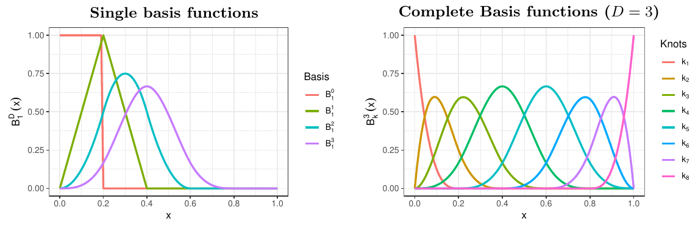

이 연재는 필자의 박사학위 논문 Bayesian Analysis of Nonstationary Extremes (Lee, 2022, University of Edinburgh)의 1.2절(Background)을 우리말로 옮기고 다듬은 것이다.
비정상 극단값의 베이지안 분석에는 베이지안 평활(Bayesian smoothing) 도구가 필요하다. 이 글에서는 벌점 B-스플라인(penalised B-splines, P-splines) 을 간단히 소개한다. 베이지안 P-스플라인은 일반화 가법모형(generalised additive models)의 틀에서 B-스플라인 기저함수로 평활과 회귀를 수행하는 준모수적 통계 방법이다 (Lang and Brezger, 2004; Brezger and Lang, 2006; Brezger and Steiner, 2008; Fahrmeir and Kneib, 2011; Bruno et al., 2016). 아래에서는 평활 모형을 구성하는 방법을 먼저 설명하고, 다음 글에서 일반화 가법모형(GAM)에서의 추론으로 넘어간다.
시계열 추세를 확률보행 사전분포로 평활하는 더 기초적인 예는 이 블로그의 평활화 기법 소개와 베이지안 평활기법 글에서 다루었다.
평활 모형과 B-스플라인
반응변수 \(y\) 에 대한 다음 비모수 평활 문제를 생각하자.
\[ y_i=f(x_i)+\varepsilon_i,\quad i=1,\ldots,n. \tag{1}\]
여기서 \(f(x)\) 는 연속 공변량 \(x\) 의 매끄러운 함수이고, \(\varepsilon\) 은 정규 오차항 \(\varepsilon\sim N(0,\sigma^2)\) 이다. 매끄러운 함수 \(f(x)\) 는 다항식 스플라인(polynomial spline)으로 근사할 수 있다. 같은 간격으로 놓인 \(m+1\) 개의 매듭(knot) \(x_{\min}=x_0<\cdots<x_m=x_{\max}\) 이 있고, 이웃한 매듭 사이의 거리가 \(h\) 라고 하자. \(B_k^D\) 를 구간 \([x_k,x_{k+1})\) 위의 \(D\) 차 다항식 스플라인이라 하자 (\(D\in\mathbb N_0\), \(k=0,\ldots,m-1\)). 그러면 함수 \(f(x)\) 는 매듭으로 나뉜 구간 위의 \(D\) 차 조각별 다항식 기저함수 \(K\) 개의 선형결합으로 근사된다.
\[ f(x)=\sum_{k=1}^{K}\beta_kB_k^D(x). \tag{2}\]
이때 \(f(x)\) 는 \((D-1)\) 번 연속 미분가능하다고 가정한다. 다항식 스플라인으로는 평활 스플라인(smoothing spline)과 B-스플라인이 널리 쓰인다 (자세한 내용은 de Boor, 2001 참고). 여기서는 B-스플라인 기저함수에 기반한 평활 방법에 집중한다.
0차 B-스플라인 기저함수는
\[ B_k^0(x)= \begin{cases} 1, & x_{k-1}\le x<x_k,\\ 0, & \text{그 밖의 경우} \end{cases} \]
로 정의되고, \(D\ge1\) 차 기저함수는 다음 점화식으로 만들어진다.
\[ B_k^D(x)=\frac{x-x_{k-D-1}}{Dh}B_k^{D-1}(x)+\frac{x_k-x}{Dh}B_{k+1}^{D-1}(x). \]

B-스플라인은 수치적으로 좋은 성질을 갖는다.
- 국소 기저(local basis): 각 기저함수는 구간 위에서 음이 아니며, 주어진 \(x\) 에서 \(K\) 개 기저함수 가운데 많아야 \(D+1\) 개만 양의 값을 갖는다.
- 합이 1: 기저함수 값의 합은 1이다. 즉, \(\sum_{k=1}^KB_k^D(x)=1\) 이다. 따라서 B-스플라인 기저함수에는 절편이 암묵적으로 들어 있다. \(B_k^0\) 항을 빼면 절편이 없는 B-스플라인을 만들 수도 있다.
- 유계성: 함수값의 범위가 위로 유계이다. 이는 수치적으로 안정된 결과를 주므로 통계적 추론에 바람직하다.
방정식 1 의 단순 비모수 평활 문제는 B-스플라인 기저함수를 이용해 행렬 형태로 쓸 수 있다.
\[ \mathbf y=\mathbf B\boldsymbol\beta+\boldsymbol\varepsilon,\qquad \mathbf B= \begin{pmatrix} B_1(x_1)&\cdots&B_K(x_1)\\ \vdots&&\vdots\\ B_1(x_n)&\cdots&B_K(x_n) \end{pmatrix}. \]
여기서 \(\mathbf y\), \(\boldsymbol\beta\), \(\boldsymbol\varepsilon\) 은 각각 반응변수, 회귀계수, 오차항을 쌓은 벡터이다. 계수벡터 \(\boldsymbol\beta\) 의 최소제곱 추정량은
\[ \hat{\boldsymbol\beta}=(\mathbf B^{\top}\mathbf B)^{-1}\mathbf B^{\top}\mathbf y \]
이고, 함수값 벡터 \(f(\mathbf x)=(f(x_1),\ldots,f(x_n))\) 의 추정량은 다음과 같다.
\[ \hat f=\mathbf B\hat{\boldsymbol\beta}=\mathbf B(\mathbf B^{\top}\mathbf B)^{-1}\mathbf B^{\top}\mathbf y. \]
적합된 곡선의 모양과 매끄러움은 B-스플라인 함수의 차수와 매듭의 개수로 결정된다. B-스플라인의 차수는 미분가능성 측면에서 매끄러움을 조절하며, 3차 다항식 스플라인(\(D=3\))이 보기 좋은 추정치를 주는 적절한 선택으로 흔히 여겨진다. 매듭도 스플라인 적합의 매끄러움을 조절한다. 매듭이 적으면 비교적 매끄러운 함수가, 많으면 구불구불한 곡선이 나온다. 그러나 매듭의 위치와 개수를 정하는 일반적인 규칙은 없다. 상황에 따라 달라지기 때문이다. 매듭 결정을 피하는 대안은 다항식 스플라인 계수에 벌점(penalty) 을 주는 것이다.
베이지안 벌점 B-스플라인
B-스플라인 평활의 벌점 접근은 회귀계수 수준의 거칠기(roughness)에 벌점을 주어 적합 곡선의 매끄러움을 조절한다 (Eilers and Marx, 1996). 벌점 최소제곱 문제는 다음과 같이 쓸 수 있다.
\[ \begin{aligned} PLS(\lambda)&=\sum_{i=1}^n\left(y_i-\sum_{k=1}^K\beta_kB_k^D(x_i)\right)^2+\lambda\sum_{k=d+1}^K(\Delta^d\beta_k)^2\\ &=(\mathbf y-\mathbf B\boldsymbol\beta)^{\top}(\mathbf y-\mathbf B\boldsymbol\beta)+\lambda\boldsymbol\beta^{\top}\mathbf K\boldsymbol\beta. \end{aligned} \tag{3}\]
여기서 \(d\) 는 차분의 차수로, \(d=1\) 이면 \(\Delta^1\beta_k=\beta_k-\beta_{k-1}\) 이고 \(d=2,3,\ldots\) 이면 \(\Delta^d\beta_k=\Delta^{d-1}\beta_k-\Delta^{d-1}\beta_{k-1}\) 이다. \(\mathbf K\) 는 차분의 차수로부터 얻는 벌점행렬이다. 모수 \(\lambda\ge0\) 은 벌점항의 영향력을 결정한다. 충분한 유연성을 위해 매듭을 많이 두면, 평활 모수 \(\lambda\) 가 구불구불한 추정치와 매끄러운 추정치 사이에서 적절한 매끄러움을 고르게 해 준다.
벌점 B-스플라인의 베이지안 버전은 Brezger and Lang (2006)이 제안하였다. 베이지안 관점에서는 모든 형태의 벌점에 대응하는 사전분포가 있다. 예를 들어 방정식 3 의 릿지(ridge)형 벌점은 방정식 2 의 계수들 사이의 \(d\) 차 차분으로 정의되는 확률보행 사전분포(random walk prior) 에 대응한다. 계수벡터 \(\boldsymbol\beta=(\beta_1,\ldots,\beta_K)^{\top}\) 에 대한 1차 또는 2차 확률보행 사전분포는 다음과 같다.
\[ \begin{aligned} \beta_k&=\beta_{k-1}+u_k, && k=2,\ldots,K, && (d=1)\\ \beta_k&=2\beta_{k-1}-\beta_{k-2}+u_k, && k=3,\ldots,K, && (d=2) \end{aligned} \]
여기서 \(u_k\) 는 평균 0, 분산 \(\tau^2\) 인 i.i.d. 정규오차, 즉 \(u_k\sim N(0,\tau^2)\) 이다. 행렬 형태로는 \(\mathbf D_d\boldsymbol\beta=\mathbf u\) 로 간단히 쓸 수 있다. \(\mathbf u\) 는 \((K-d)\) 개 오차를 쌓은 벡터이고, \(\mathbf D_d\) 는 \((K-d)\times K\) 차원의 \(d\) 차 차분행렬이다. 예를 들어 \(\mathbf D_1\) 과 \(\mathbf D_2\) 는
\[ \mathbf D_1= \begin{bmatrix} -1&1&&&\\ &-1&1&&\\ &&\ddots&\ddots&\\ &&&-1&1 \end{bmatrix},\qquad \mathbf D_2= \begin{bmatrix} 1&-2&1&&&\\ &1&-2&1&&\\ &&\ddots&\ddots&\ddots&\\ &&&1&-2&1 \end{bmatrix} \]
이고, \(d\) 차 차분행렬은 \(\mathbf D_d=\mathbf D_1\mathbf D_{d-1}\) 로 재귀적으로 얻는다. 여기서 \(\mathbf D_1\) 은 크기를 맞춘 1차 차분행렬이다.
분산 \(\tau^2\) 은 방정식 3 의 \(\lambda\) 처럼 평활 함수의 매끄러움 정도를 조절한다. \(\tau^2\) 이 작으면 계수벡터 \(\boldsymbol\beta\) 의 계수들이 직전 계수 값에 가까워지는 경향이 있어 덜 구불구불한 곡선이 적합된다. \(\tau^2\) 이 주어졌을 때 회귀계수 \(\boldsymbol\beta\) 의 조건부 확률은
\[ \pi(\boldsymbol\beta\mid\tau^2)\propto\left(\frac{1}{\tau^2}\right)^{(K-d)/2}\exp\left(-\frac{1}{2\tau^2}\boldsymbol\beta^{\top}\mathbf K\boldsymbol\beta\right) \tag{4}\]
이다. 여기서 \(\mathbf K=\mathbf D_d^{\top}\mathbf D_d\) 는 확률보행 사전분포에서 얻는 벌점행렬이다. 벌점행렬 \(\mathbf K\) 는 완전계수(full rank)가 아니며 \(\mathrm{rank}(\mathbf K)=K-d\) 이다. \(\mathbf D_d\) 의 영공간(null space)에 해당하는 계수의 벌점 없는 부분, 즉 \(\boldsymbol\beta\) 의 처음 \(d\) 개 계수에는 평탄한(균일) 사전분포가 부여된 셈이다.
완전한 베이지안 설정에서는 정밀도 모수 \(\tau^2\) 에도 초사전분포(hyper-prior)를 두어 회귀계수와 함께 추정한다. 초모수 \(\tau^2\) 과 분산 모수 \(\sigma^2\) 에는 완전 조건부 분포를 쉽게 얻기 위해 켤레(conjugate) 역감마 사전분포를 흔히 가정한다. \((\boldsymbol\beta,\tau^2,\sigma^2)\) 의 결합 사후분포는 우도함수와 사전분포들의 곱으로 표현된다.
\[ \pi(\boldsymbol\beta,\tau^2,\sigma^2\mid\mathbf y)\propto L(\mathbf y\mid\boldsymbol\beta,\tau^2,\sigma^2)\,p(\boldsymbol\beta\mid\tau^2)\,p(\sigma^2)\,p(\tau^2). \]
각 모수의 완전 조건부 분포는 이 결합분포로부터 유도할 수 있으며, 이를 이용한 깁스 샘플링(Gibbs sampling)으로 사후분포를 추론한다.
주요 참고문헌
- Brezger, A. and Lang, S. (2006). Generalized structured additive regression based on Bayesian P-splines. Computational Statistics & Data Analysis, 50, 967–991.
- Brezger, A. and Steiner, W. J. (2008). Monotonic regression based on Bayesian P-splines: an application to estimating price response functions from store-level scanner data. Journal of Business & Economic Statistics, 26, 90–104.
- Bruno, F., Greco, F. and Ventrucci, M. (2016). Non-parametric regression on compositional covariates using Bayesian P-splines. Statistical Methods & Applications, 25, 75–88.
- de Boor, C. (2001). A Practical Guide to Splines (rev. ed.). Springer.
- Eilers, P. H. and Marx, B. D. (1996). Flexible smoothing with B-splines and penalties. Statistical Science, 11, 89–102.
- Fahrmeir, L. and Kneib, T. (2011). Bayesian Smoothing and Regression for Longitudinal, Spatial and Event History Data. Oxford University Press.
- Lang, S. and Brezger, A. (2004). Bayesian P-splines. Journal of Computational and Graphical Statistics, 13, 183–212.